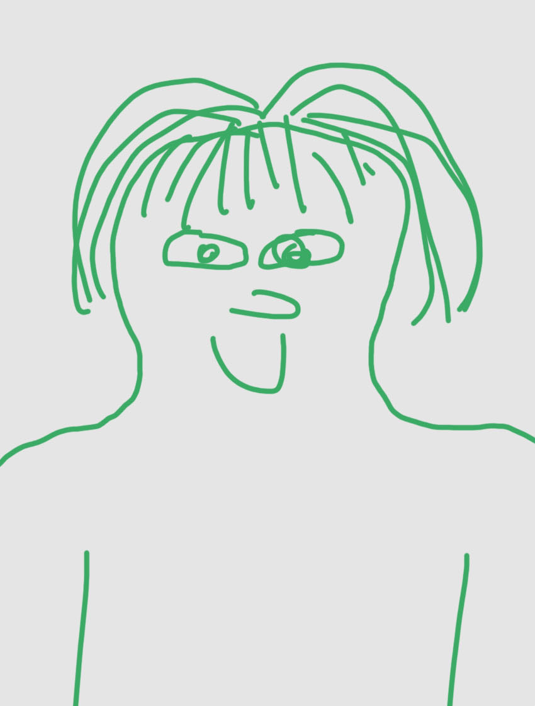

Chloé Decosterd
Cabinet de psychothérapie à Lausanne
« Toute vie véritable est rencontre »
– Martin Buber

« Toute vie véritable est rencontre »
– Martin Buber
Chloé Décorsterd vous accueille dans son cabinet de psychothérapie situé à proximité de la Gare de Lausanne,
à l'Avenue Dapples 54.
Psychologue spécialiste en psychothérapie FSP et Psychothérapeute reconnue au niveau fédéral.
Elle pratique des bilans psychologiques (cognitifs et affectifs) pour enfants/adolescents et des soutiens/psychothérapies enfant, adolescents ou adultes.
Elle est égalemetn spécialiste en hypnose médicale et thérapeutique pour enfants, adolescents et adultes.
Chez l'adulte, certains truc doivent vous mettre la puce à l'oreille genre c'est le moment d'y aller :
Le bilan psychologique a pour but d’évaluer les difficultés que l’enfant traverse dans son développement tant au niveau affectif que cognitif. Un ensemble de tests est proposé (test d’intelligence, test d’attention et tests psycho-affectifs, dessins). Les résultats du bilan sont exposés aux parents et à l’enfant en se centrant sur les ressources de l’enfant et en réfléchissant avec les parents sur les pistes qui permettent d’aider l’enfant à résoudre les difficultés qu’il traverse.
Le travail psychothérapeutique au travers du jeu et de la créativité (dessin, bricolage) favorise l’expression de soi, ce qui permet de soutenir le potentiel de développement de l’enfant ou l’adolescent.
De plus l’hypnose peut être proposé dans l’optique d’activer les ressources de l’enfants et lorsqu’il fait face à ce type de problématique : anxiété, trouble du sommeil, stress en lien avec des difficultés externes, phobies.
Mon approche de la psychothérapie comporte deux méthodes de la psychologie dite « humaniste ». La psychologie humaniste s'appuie sur les postulats de base suivants:
L’approche centrée sur la personne a été développée par le psychologue américain C.R. Rogers (1902-1987).
Pour C.R. Rogers, le changement thérapeutique intervient lorsque le thérapeute offre à la personne qui consulte un climat relationnel qui favorise son développement au travers de trois attitudes qui définissent la relation thérapeutique : la considération empathique, l’acceptation inconditionnelle (non-jugement) et la congruence ou authenticité du thérapeute.